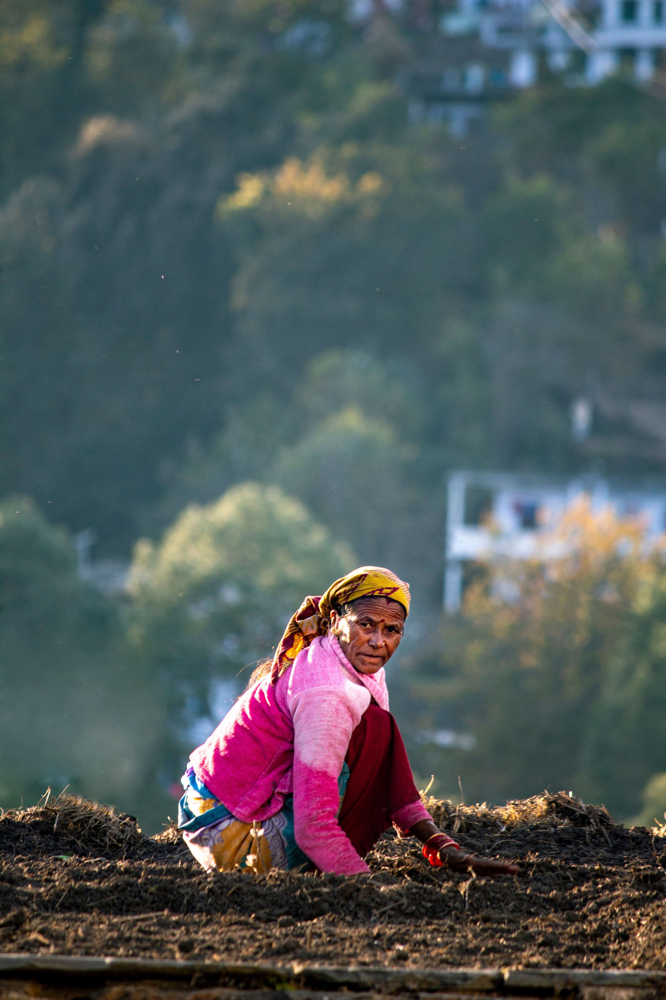
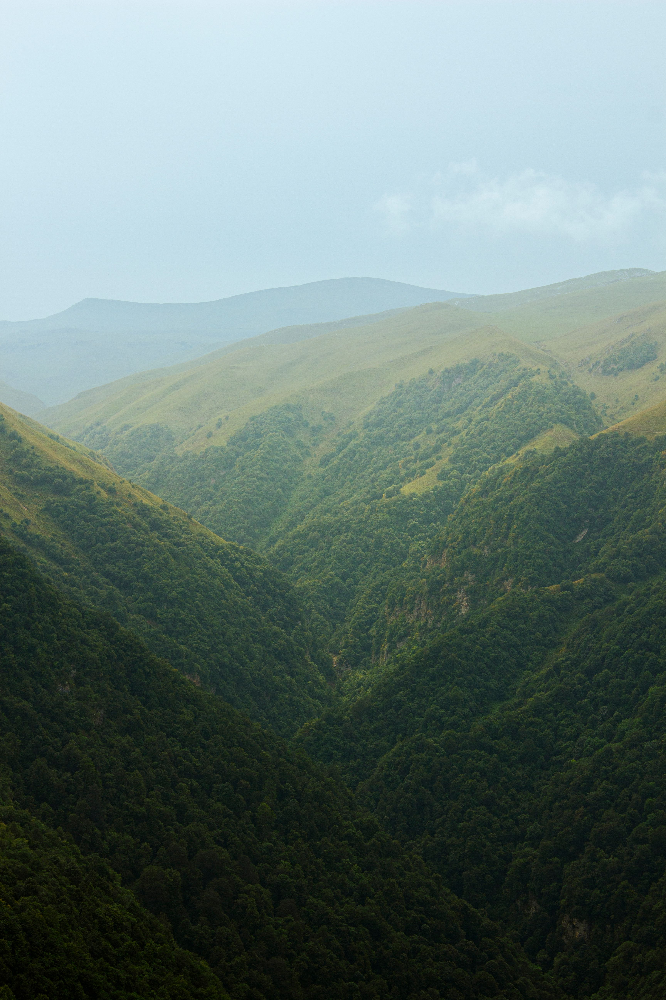
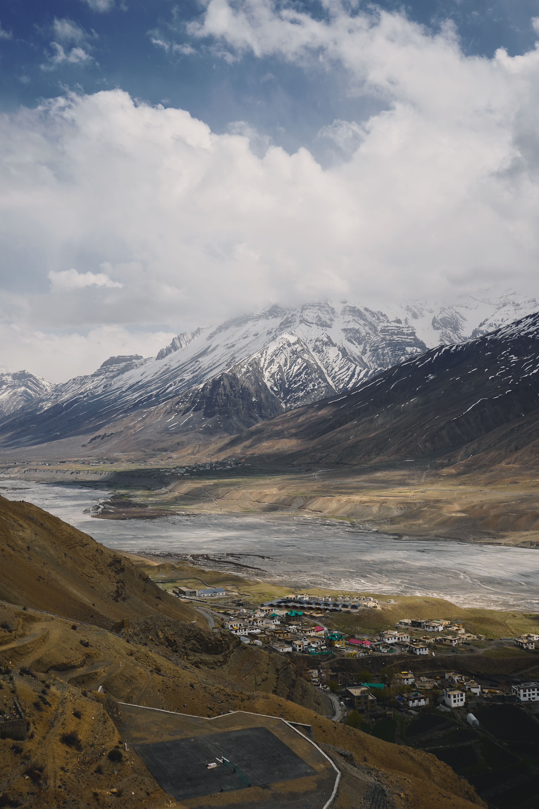
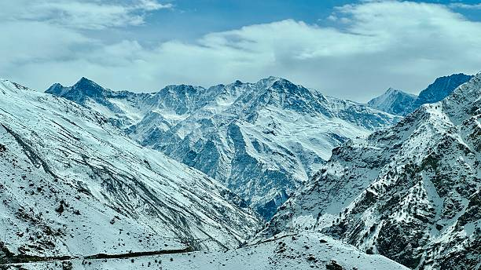
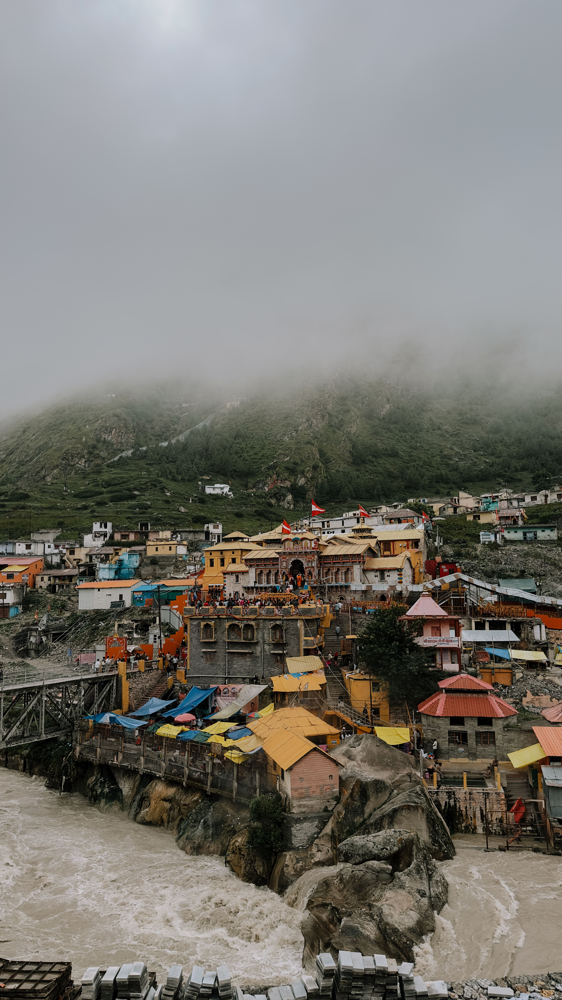

01
Village Life
Wake up to quiet mountain mornings, walk through small villages and discover how communities live with the landscape.
We help you experience them through their villages, people, food, stories and everyday life.
DISCOVER OUR STORY ↓Live Local Himalaya was created with one simple idea: the Himalayas should be experienced, not just visited.
Behind every mountain road is a village. Behind every village is a family, a tradition, a kitchen, a story and a way of life that deserves to be discovered.
We connect travellers with these real Himalayan experiences — local stays, traditional food, village walks, mountain adventures and conversations with the people who call these mountains home.
Places where travellers can experience authentic local life.
From village walks to local food, crafts and mountain adventures.
Carefully selected stays connected with local families and communities.
Different landscapes, cultures, communities and traditions.
Moments created through meaningful Himalayan journeys.
Hosts, guides, cooks, drivers, artisans and local storytellers.

Our work is about creating journeys that bring travellers closer to Himalayan communities.
Instead of rushing from one tourist attraction to another, we create opportunities to slow down, meet people and understand the place.
Homestays, village houses, cabins and locally managed properties.
Walk through villages, meet families and experience everyday mountain life.
Discover traditional Himalayan dishes, ingredients and cooking traditions.
Treks, forest walks, riverside trails and outdoor experiences.
Wake up to quiet mountain mornings, walk through small villages and discover how communities live with the landscape.
Sit around local kitchens, taste traditional recipes and understand the ingredients that have been part of mountain life for generations.
Every valley has its own stories, festivals, architecture, crafts and traditions. We help travellers experience them respectfully.
Local hosts, guides, cooks, drivers and artisans are not just service providers. They are part of the experience.
From quiet forests to high-altitude deserts, our journeys explore different sides of the Himalayan landscape.




We believe tourism should create a connection between travellers and the communities they visit.
Support local families and locally owned businesses.
Encourage respectful and responsible travel.
Give travellers meaningful experiences instead of rushed sightseeing.
Help preserve the stories, food and traditions of Himalayan communities.
We started with a simple question: what if travellers could experience the Himalayas through local life?
We began discovering lesser-known villages, local hosts and experiences beyond the usual tourist routes.
We connected with homestay owners, guides, cooks, drivers, artisans and people who know the mountains best.
Today we bring these connections together into thoughtfully designed Himalayan experiences.
Your Himalayan journey should be more than a photograph. It should be a memory, a conversation, a meal, a new perspective and a connection that stays with you.
EXPLORE OUR JOURNEYS ↗